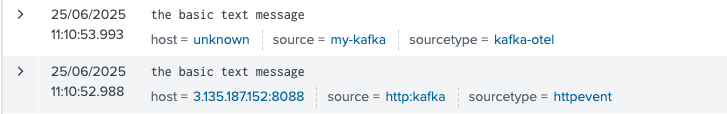
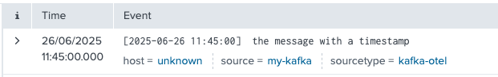
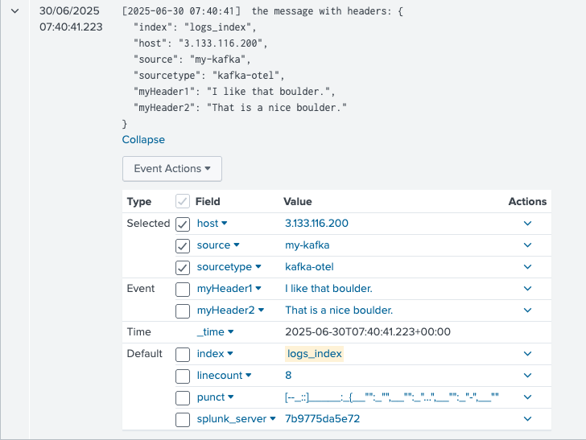
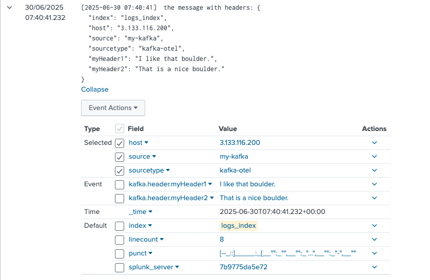
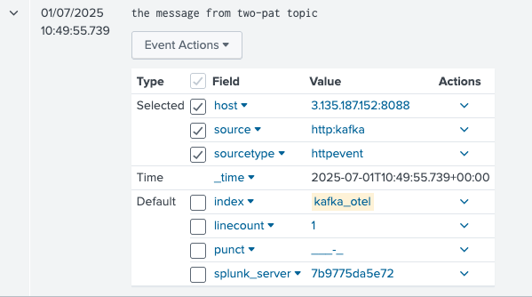
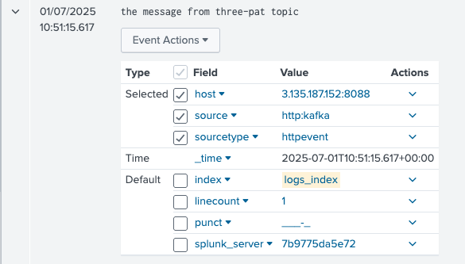
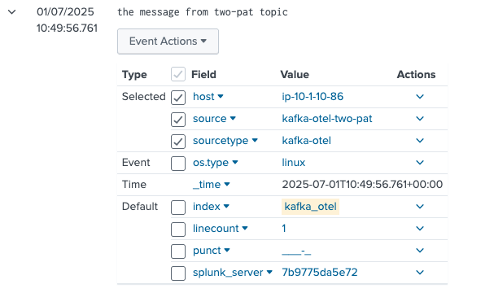
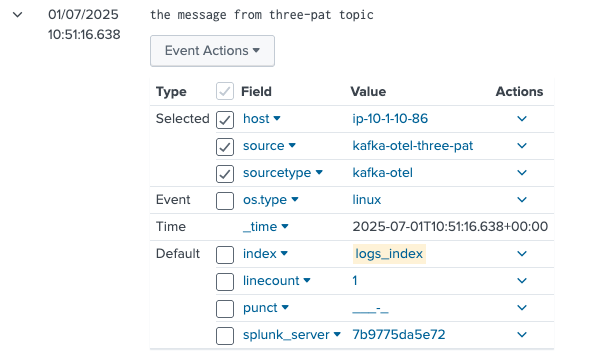
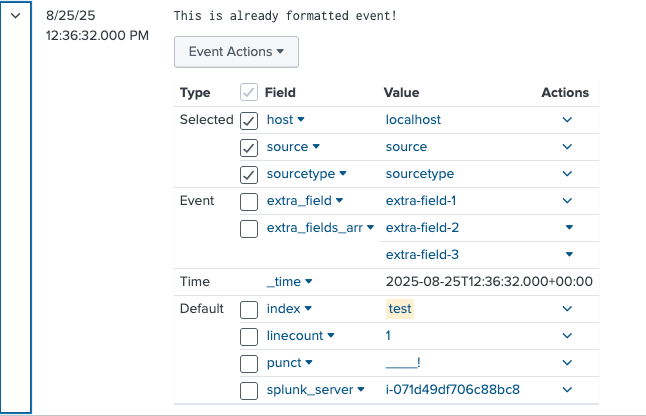

Migration
Migration from Splunk Connect for Kafka into Splunk OTel Collector for Kafka¶
Naming:
- SC4Kafka - the Splunk Connect for Kafka
- SOC4Kafka - the Splunk OTel Collector for Kafka (the current project)
The biggest difference between SC4Kafka and SOC4Kafka is that:
| Field | SC4Kafka | SOC4Kafka |
|---|---|---|
| Type | Connector based on Kafka Connect, installed as an add-on for Kafka. | Standalone product that works independently of Kafka. |
| Message Retrieval | Retrieves events directly from Kafka. | Consumes messages from Kafka via the Kafka OpenTelemetry Receiver (native Kafka consumer protocol). |
| Processing | Sends events directly to Splunk using the Splunk HEC exporter. | Processes messages internally and supports customization using transform processors before sending them to the Splunk HEC exporter. |
| Integration with Kafka | Tightly integrated as part of the Kafka ecosystem. | Can run independently and be deployed on an external server, separate from the Kafka cluster. |
| Scaling | Scaling is managed using the tasks.max setting and supports multiple HEC endpoints. |
Scaling is achieved by deploying multiple SOC4Kafka instances with the same group_id. Multiple HEC endpoints are not supported, but you can create multiple Splunk HEC exporters and add them to the pipeline. |
Note
- The timestamp behavior differs between the two solutions. SOC4Kafka assigns a timestamp to the event based on when it is indexed, whereas Splunk Connect for Kafka uses the timestamp from when the event was originally produced.
- Additionally messages from SOC4Kafka appear in Splunk first, as it forwards events to Splunk immediately. In contrast, Splunk Connect for Kafka processes and forwards events in batches, typically every configured number of seconds.
SC4Kafka to SOC4Kafka mapping of configuration parameters¶
The configuration settings for SC4Kafka cannot be directly transferred to SOC4Kafka due to differences in their architecture and design. However, many configuration parameters have equivalent settings in SOC4Kafka. A detailed description of the configuration parameter mappings can be found in the following table, which provides a comparison of the corresponding properties in both solutions.
Migration process from SC4Kafka to SOC4Kafka¶
Before migrating please get familiar with the migration strategies.
Important Notes:¶
- Migration from the old SC4Kafka connector to SOC4Kafka collector is a manual process. There is no automated tool available for this migration.
- Begin with a simple configuration, then gradually add more settings. This approach helps in isolating and troubleshooting potential issues during the migration.
Migrating from SC4Kafka to SOC4Kafka involves several steps to ensure a smooth transition. Below are the key steps to follow during the migration process:
- Review Current SC4Kafka Configuration: Start by thoroughly reviewing your existing SC4Kafka configuration. Document all the settings, including topics, indexes, sourcetypes, and any custom configurations you have in place. In order to read the existing SC4Kafka configuration you can use REST API calls as described in the section below.
- Map Configuration Parameters: Use the configuration mapping table to identify equivalent settings in SOC4Kafka. This will help you understand how to translate your SC4Kafka configuration into SOC4Kafka format.
- Create SOC4Kafka Configuration: Based on the mapped parameters, create a new configuration file for SOC4Kafka. Make sure to include all relevant settings, such as Kafka brokers, topics, Splunk HEC endpoint, and token.
- Set Up SOC4Kafka: Install SOC4Kafka on your desired server. Ensure that you have the necessary permissions and access to both Kafka and Splunk.
- Test the Configuration: Before fully switching over, test the SOC4Kafka configuration in a controlled environment. Verify that it can successfully connect to Kafka, retrieve messages, and send them to Splunk.
- Monitor and Validate: Once you have deployed SOC4Kafka, closely monitor its performance and validate that all messages are being correctly forwarded to Splunk. Check for any discrepancies in data or performance issues.
- Decommission SC4Kafka: After confirming that SOC4Kafka is functioning as expected, you can decommission your SC4Kafka setup.
Reading SC4Kafka existing configuration¶
Checking logs encoding format¶
When migrating from SC4Kafka to SOC4Kafka, it is important to consider the message format used in Kafka topics.
In case of SC4Kafka the default message format settings are stored in connect-distributed.properties file. The key
and value converter (org.apache.kafka.connect.json.JsonConverter or org.apache.kafka.connect.storage.StringConverter)
is a part of Kafka’s java ecosystem, in SOC4Kafka it can be handled by setting receivers.kafka.logs.encoding to json or text depending on SC4Kafka configuration.
Reading SC4Kafka connector configuration¶
When migrating from SC4Kafka to SOC4Kafka following commands may be useful:
| Action | curl Command | Description |
|---|---|---|
| List active connectors | curl http://localhost:8083/connectors |
Lists all active connectors |
| Get SC4Kafka connector info | curl http://localhost:8083/connectors/<CONNECTOR_NAME> |
Retrieves information about the specified SC4Kafka connector |
| Get SC4Kafka connector config | curl http://localhost:8083/connectors/<CONNECTOR_NAME>/config |
Retrieves configuration details of the specified SC4Kafka connector |
| Get SC4Kafka connector task info | curl http://localhost:8083/connectors/<CONNECTOR_NAME>/tasks |
Retrieves task information for the specified SC4Kafka connector |
Migration examples:¶
Following examples demonstrate how to migrate common SC4Kafka configurations to SOC4Kafka. The section contains examples for:
- Basic config for Kafka string messages
- Timestamp extraction
- Set host automatically
- Extract headers
- Send data from multiple kafka topics to multiple Splunk HEC endpoints
- Sending events that are already in HEC format
The basic config for Kafka string messages¶
SC4Kafka config¶
curl localhost:8083/connectors -X POST -H "Content-Type: application/json" -d '{
"name": "kafka-connect-splunk",
"config": {
"connector.class": "com.splunk.kafka.connect.SplunkSinkConnector",
"tasks.max": "3",
"splunk.indexes": "logs_index",
"topics":"three-pat",
"splunk.hec.uri": "https://splunk-hec-endpoint:8088",
"splunk.hec.token": "your-splunk-hec-token"
}
}'
SOC4Kafka config¶
receivers:
kafka:
brokers: ["kafka-broker:9092"]
logs:
topics:
- "three-pat"
encoding: "text"
exporters:
splunk_hec:
token: "your-splunk-hec-token"
endpoint: "https://splunk-hec-endpoint:8088/services/collector"
source: my-kafka
sourcetype: kafka-otel
index: "logs_index"
splunk_app_name: "soc4kafka"
sending_queue:
enabled: true
num_consumers: 10
queue_size: 10000
block_on_overflow: true
sizer: items
batch:
min_size: 1000
service:
pipelines:
logs:
receivers: [kafka]
exporters: [splunk_hec]

Timestamp extraction¶
Even though by default kafka events from SOC4Kafka are marked with time of collecting data, if only we have a timestamp included as a part of the log body we can extract it. For example if the event is:
[2025-06-26 11:45:00] the message with a timestamp
receivers:
kafka:
brokers: ["kafka-broker:9092"]
logs:
topics:
- "three-pat"
encoding: "text"
processors:
transform:
error_mode: ignore
log_statements:
- set(log.attributes["extracted_ts"], ExtractPatterns(log.body, "\\[(?P<timestamp>[0-9]{4}-[0-9]{2}-[0-9]{2} [0-9]{2}:[0-9]{2}:[0-9]{2})\\]"))
- set(log.time, Time(log.attributes["extracted_ts"]["timestamp"], "%Y-%m-%d %H:%M:%S", "UTC"))
- delete_key(log.attributes, "extracted_ts")
exporters:
splunk_hec:
token: "your-splunk-hec-token"
endpoint: "https://splunk-hec-endpoint:8088/services/collector"
source: my-kafka
sourcetype: kafka-otel
index: "logs_index"
splunk_app_name: "soc4kafka"
sending_queue:
enabled: true
num_consumers: 10
queue_size: 10000
block_on_overflow: true
sizer: items
batch:
min_size: 1000
service:
pipelines:
logs:
receivers: [kafka]
processors: [transform]
exporters: [splunk_hec]
and the event in Splunk would be:

Set host automatically¶
SOC4Kafka config¶
By default, events produced by SOC4Kafka may have the host field marked as unknown. This behavior can be adjusted using the resource detection processor.
The configuration example below demonstrates how to retrieve the hostname of the machine where SOC4Kafka is installed. Alternatively, the host value can be sourced from environmental variables or a specific API, depending on the client’s requirements. The processor is flexible and can be tailored to meet specific use cases, as detailed in the official documentation.
receivers:
kafka:
brokers: ["kafka-broker:9092"]
logs:
topics:
- "three-pat"
encoding: "text"
processors:
resourcedetection:
detectors: ["system"]
system:
hostname_sources: ["os"]
exporters:
splunk_hec:
token: "your-splunk-hec-token"
endpoint: "https://splunk-hec-endpoint:8088/services/collector"
source: my-kafka
sourcetype: kafka-otel
index: "logs_index"
splunk_app_name: "soc4kafka"
sending_queue:
enabled: true
num_consumers: 10
queue_size: 10000
block_on_overflow: true
sizer: items
batch:
min_size: 1000
service:
telemetry:
logs:
level: "debug"
pipelines:
logs:
receivers: [kafka]
processors: [resourcedetection]
exporters: [splunk_hec]
Extract headers¶
If there are additional headers present in the incoming data, they can be extracted and added as event attributes. This allows for greater flexibility in customizing event metadata. In the following examples, we will extract the following headers and include them as event attributes:
- index
- source
- sourcetype
- host
- myHeader1
- myHeader2
SC4Kafka config¶
curl localhost:8083/connectors -X POST -H "Content-Type: application/json" -d '{
"name": "kafka-connect-splunk",
"config": {
"connector.class": "com.splunk.kafka.connect.SplunkSinkConnector",
"tasks.max": "3",
"splunk.indexes": "logs_index",
"topics":"three-pat",
"splunk.hec.uri": "https://splunk-hec-endpoint:8088",
"splunk.hec.token": "your-splunk-hec-token",
"splunk.header.index": "index",
"splunk.header.source": "source",
"splunk.header.sourcetype": "sourcetype",
"splunk.header.host": "host",
"splunk.header.custom": "myHeader1,myHeader2"
}
}'
SOC4Kafka config¶
receivers:
kafka:
brokers: ["kafka-broker:9092"]
logs:
topics:
- "three-pat"
encoding: "text"
header_extraction:
extract_headers: true
headers: ["index", "source", "sourcetype", "host", "myHeader1", "myHeader2"]
exporters:
splunk_hec:
token: "your-splunk-hec-token"
endpoint: "https://splunk-hec-endpoint:8088/services/collector"
splunk_app_name: "soc4kafka"
sending_queue:
enabled: true
num_consumers: 10
queue_size: 10000
block_on_overflow: true
sizer: items
batch:
min_size: 1000
otel_attrs_to_hec_metadata:
index: kafka.header.index
host: kafka.header.host
source: kafka.header.source
sourcetype: kafka.header.sourcetype
service:
pipelines:
logs:
receivers: [kafka]
exporters: [splunk_hec]
This is how events generated by SC4Kafka are displayed in Splunk:

Similarly, events generated by SOC4Kafka are presented in a comparable format:

Send data from multiple kafka topics to multiple Splunk HEC endpoints¶
In SC4Kafka, you can provide a list of topics along with a corresponding list of indexes, where each topic’s data is mapped to its respective index (e.g., the first topic maps to the first index, the second topic to the second index, and so on).
In SOC4Kafka, the configuration is more flexible and modular. You define Kafka receivers and Splunk HEC exporters separately and connect them using a pipeline structure. Additionally, you can configure different source and sourcetype values directly within the settings of each Splunk HEC exporter, enabling greater customization for data routing and metadata assignment.
SC4Kafka config¶
curl localhost:8083/connectors -X POST -H "Content-Type: application/json" -d '{
"name": "kafka-connect-splunk",
"config": {
"connector.class": "com.splunk.kafka.connect.SplunkSinkConnector",
"tasks.max": "3",
"splunk.indexes": "logs_index,kafka_otel",
"topics":"three-pat,two-pat",
"splunk.hec.uri": "https://splunk-hec-endpoint:8088",
"splunk.hec.token": "your-splunk-hec-token",
}
}'
SOC4Kafka¶
receivers:
kafka/1:
brokers: ["kafka-broker:9092"]
logs:
topics:
- "three-pat"
encoding: "text"
kafka/2:
brokers: ["kafka-broker:9092"]
logs:
topics:
- "two-pat"
encoding: "text"
processors:
resourcedetection:
detectors: ["system"]
system:
hostname_sources: ["os"]
exporters:
splunk_hec/1:
token: "your-splunk-hec-token"
endpoint: "https://splunk-hec-endpoint:8088/services/collector"
source: kafka-otel-three-pat
sourcetype: kafka-otel
index: "logs_index"
splunk_app_name: "soc4kafka"
sending_queue:
enabled: true
num_consumers: 10
queue_size: 10000
block_on_overflow: true
sizer: items
batch:
min_size: 1000
splunk_hec/2:
token: "your-splunk-hec-token"
endpoint: "https://splunk-hec-endpoint:8088/services/collector"
source: kafka-otel-two-pat
sourcetype: kafka-otel
index: "kafka_otel"
splunk_app_name: "soc4kafka"
sending_queue:
enabled: true
num_consumers: 10
queue_size: 10000
block_on_overflow: true
sizer: items
batch:
min_size: 1000
service:
pipelines:
logs/1:
receivers: [kafka/1]
processors: [resourcedetection]
exporters: [splunk_hec/1]
logs/2:
receivers: [kafka/2]
processors: [resourcedetection]
exporters: [splunk_hec/2]
The events generated by SC4Kafka are:


While the events from SOC4Kafka are:


Mind that SOC4Kafka allows you to configure a unique sourcetype and source for each individual topic. This flexibility simplifies filtering and organizing data within Splunk, ensuring better control over your event categorization and search results.
Sending events that are already in HEC format¶
In SC4Kafka you can collect events that are already formatted in HEC format, by setting splunk.hec.json.event.formatted option to true.
SC4Kafka config¶
curl localhost:8083/connectors -X POST -H "Content-Type: application/json" -d' {
"name": "splunk-prod-financial",
"config": {
"connector.class": "com.splunk.kafka.connect.SplunkSinkConnector",
"tasks.max": "20",
"topics": "t1",
"splunk.hec.uri": "https://idx1:8088,https://idx2:8088,https://idx3:8088",
"splunk.hec.token": "your-splunk-hec-token",
"splunk.hec.json.event.formatted": "true",
"key.converter": "org.apache.kafka.connect.storage.StringConverter",
"key.converter.schemas.enable": "false",
"value.converter": "org.apache.kafka.connect.storage.StringConverter",
"value.converter.schemas.enable": "false"
}
}'
SOC4Kafka¶
To achieve the same result in SOC4Kafka use export_raw option in exporter configuration:
receivers:
kafka:
brokers: ["kafka-broker:9092"]
logs:
topics:
- "topic"
encoding: "text"
exporters:
splunk_hec:
token: "your-splunk-hec-token"
endpoint: "https://splunk-hec-endpoint:8088/services/collector"
source: otel
sourcetype: otel
index: test
splunk_app_name: "soc4kafka"
sending_queue:
enabled: true
num_consumers: 10
queue_size: 10000
block_on_overflow: true
sizer: items
batch:
min_size: 1000
export_raw: true
service:
pipelines:
logs:
receivers: [kafka]
exporters: [splunk_hec]
Example of event in this format:
{
"index":"test",
"host":"localhost",
"sourcetype":"sourcetype",
"source":"source",
"event":"This is already formatted event!",
"fields":
{
"extra_field":"extra-field-1",
"extra_fields_arr":
[
"extra-field-2",
"extra-field-3"
]
}
}
The example message appears like this in Splunk search results when properly configured:

Recommended Migration Strategy¶
There are several considerations to take into account when migrating from SC4Kafka to SOC4Kafka. During the transitional phase—when both SC4Kafka and SOC4Kafka are enabled and SC4Kafka has not yet been decommissioned, Kafka’s at‑least‑once delivery semantics may result in duplicate events being ingested into Splunk. This behavior is expected and is a consequence of Kafka’s design, which prioritizes data durability and avoidance of data loss over deduplication.
There are multiple approaches to performing the migration. For most of them, it is important to understand how Kafka consumer groups are used by both connectors.
Check running consumer groups¶
First, identify the running SC4Kafka connectors:
curl http://localhost:8083/connectors
Each connector name returned by this command corresponds to a Kafka Connect connector instance. Kafka Connect automatically derives a consumer group ID using the following pattern: connect-<CONNECTOR_NAME>.
For example, if the connector list is:
["kafka-connect-splunk"]
The corresponding consumer group ID will be: connect-kafka-connect-splunk.
You can verify consumer group activity and partition assignments from the Kafka perspective using the built‑in kafka-consumer-groups.sh script located in Kafka’s bin directory:
./kafka-consumer-groups.sh \
--bootstrap-server localhost:9092 \
--describe \
--group connect-kafka-connect-splunk
Example output:
./kafka-consumer-groups.sh --bootstrap-server localhost:9092 --describe --group connect-kafka-connect-splunk
GROUP TOPIC PARTITION CURRENT-OFFSET LOG-END-OFFSET LAG CONSUMER-ID HOST CLIENT-ID
connect-kafka-connect-splunk topic1 0 3100135 3100135 0 connector-consumer-kafka-connect-splunk-0-a299967d-4ba2-4d8c-95f0-7f7db4f029ed /10.236.5.232 connector-consumer-kafka-connect-splunk-0
This output confirms which partitions are currently assigned to SC4Kafka and whether offsets are being actively committed.
Strategy 1: Use different consumer groups¶
If no group_id is explicitly configured in SOC4Kafka, the connector uses its default consumer group ID: otel_collector. Because this consumer group ID differs from the one used by SC4Kafka, both connectors will independently consume the same Kafka topic.
As a result:
- SC4Kafka and SOC4Kafka each process all events from Kafka
- All events are ingested twice into Splunk
- Duplicate events will continue to appear until SC4Kafka is fully decommissioned
This approach is not recommended for production use unless duplicate ingestion is explicitly acceptable or temporary duplication is accounted for during the migration window.
Strategy 2: Use the Same Consumer Group ID¶
In this strategy, SC4Kafka and SOC4Kafka are configured to use the same Kafka consumer group ID. This causes both connectors to participate in the same consumer group and share partition assignments rather than independently consuming all messages.
Configuration
Configure SOC4Kafka with the same group_id used by SC4Kafka. For example:
receivers:
kafka:
brokers:
- "kafka-broker:9092"
logs:
topics:
- "topic1"
encoding: "text"
group_id: connect-kafka-connect-splunk
Expected Behavior
When both connectors are running with the same consumer group:
- Kafka assigns partitions to only one consumer per partition
- SC4Kafka and SOC4Kafka share consumption based on partition assignments
- Events are not duplicated by design
- Kafka determines partition ownership dynamically during group rebalances
However, Kafka consumer groups are designed for parallel work sharing, not for active/standby failover. So when you decommission
SC4Kafka with the same group_id configured, SOC4Kafka will take over uncommitted partitions. Offsets that were processed but not yet committed by SC4Kafka may be replayed, this replay can result in duplicate events being ingested into Splunk.
Note
Kafka consumer groups are optimized for resilience and throughput, not for seamless connector replacement. This strategy reduces duplication compared to using separate consumer groups but does not eliminate it entirely.
Using the same consumer group ID for SC4Kafka and SOC4Kafka is the recommended migration approach when both connectors must temporarily coexist. This strategy minimizes duplicate ingestion compared to using separate consumer groups and allows for a controlled transition, provided that connector shutdown is carefully coordinated.
Strategy 3: Use Separate Topics (Parallel Topics Migration)¶
In this strategy, new Kafka topics are introduced specifically for SOC4Kafka, while SC4Kafka continues to consume from the existing topics. Event producers are reconfigured to send data to the new topics, allowing both connectors to operate in parallel without sharing consumer groups or partitions.
Configuration
- Create new Kafka topics for SOC4Kafka, typically by using a clear naming convention to distinguish them from existing topics. For example:
kafka-topics.sh \
--bootstrap-server localhost:9092 \
--create \
--topic topic2 \
--partitions 10 \
--replication-factor 1
- Update Kafka producers to publish events to the new topics (e.g.,
topic2) instead of the original topics. - Configure SOC4Kafka to consume from the new topics:
receivers:
kafka:
brokers:
- "kafka-broker:9092"
logs:
topics:
- "topic2"
encoding: "text"
- Leave SC4Kafka configured to consume from the original topics (e.g.,
topic1). - Once all messages are ingested by SC4Kafka, you can safely stop the connector.